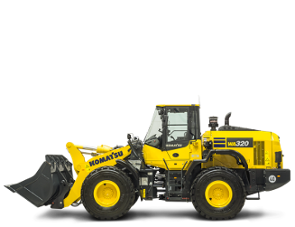
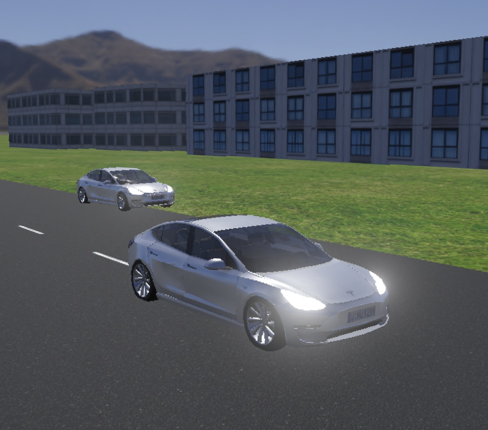
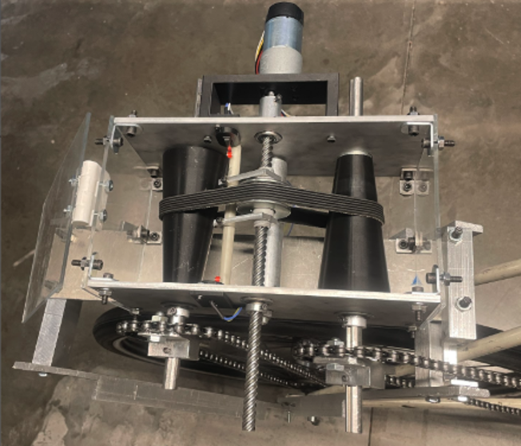

Projects
Below are highlights of my engineering projects. Click to read more about each one.

Autonomous wheel loader control
Developing a full autonomy stack for a wheel loader, combining RRT-based planning, B-spline smoothing, and real-time NMPC within a ROS2 + Isaac Sim environment.

Autonomous Vehicle Control
Designed full-stack planning and control for a simulated Tesla Model 3, integrating A*, PID/LQR control, and EKF-SLAM for robust autonomous navigation.

Continuous Variable Transmission Bicycle
Built the control system for a CVT bicycle using encoder-driven PID control and IMU sensing, enabling smooth real-time gear ratio adjustment and a functional prototype.

Policy Gradient RL for Control
Developed and evaluated a suite of deep reinforcement learning agents to solve CartPole-v1, applying policy-gradient methods.